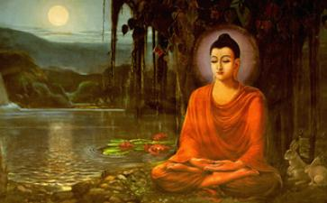

何为“三净肉”，三净肉即三种清净的肉：一、不见，我眼不见它被杀时的情景；
二、不闻，我耳不听它被杀时哀叫的声音；
三、不疑，它之死不疑是为我而杀者。
那么
《
《显识经》：一切卵（蛋类）不可食。
《梵网经
大慈悲性种子，一切众生见而舍去，是故一切菩萨，不得食一切众生肉，食肉得无量罪。若故食者，犯轻垢罪。
《楞严经》：“清净
从上可以看出、释迦牟尼佛与其僧侣们是真正的持净素者！
可现在却有许多人说：“原始佛教并没有规定僧人吃素，而是
《
已开大悟，成就大智慧、大力量的释迦牟尼佛，早在2500前就预见到末法时代会有许多自称佛教徒的人，却在吃肉！会有许多人声称吃肉也可以开悟，行菩萨道。
他告知阿难：凡是教人吃肉的，都是魔说。这些人都是鬼神派来的！并告知当时因砂石之地草木不生，他才用
《楞严经》：“我灭度后末法之中，多此鬼神，炽盛
释迦牟尼给中国带来了令人解脱成佛的
梁武帝名萧衍，虔信佛教，曾三度以身舍佛。因其对佛教经典熟稔于心，深谙佛理，他根据
梁武帝是真正了解大乘佛法慈悲教义的重点，他不但下了一道“断杀绝宗庙牺牲诏”，禁止宗庙用肉食祭祀，也不准太医以“生类合药”这项措施，更重大一项历史性的措施，就是梁武帝自己以身作则，以王法为后盾强制执行。为此，他亲自写了一篇《断酒肉文》，公告说明这项历史性措施。在《断酒肉文》中，除了引证《大般涅槃经》、《
一、僧人不断鱼肉，会有九项理由“不及外道”，但一流的佛法，要有一流的弘法人才，若被外道比下去，太辜负僧宝之尊了。
二、僧人不断酒肉，也有九种连在家
三、僧人食肉，会有远离声闻法、辟支佛法、菩萨道、佛果等四十六种修行障碍。
四、僧人食肉，将种下魔行、
五、若相信佛所言不虚？就不能因为尚未证得道眼，就看不清、想不透，众生肉即过去生有缘眷属，一旦吃肉，便会有至亲成为怨敌的果报。
六、啖食众生，产生理、事二障难，理障就是“愚痴无慧”，翻成白话就是“变笨”。事障就是在修行路上，易被干扰引入歧途。
聪慧的梁武帝，除了愿力深广外，也明白执行新信条，一定遭致部分的反弹力量，所以，他索性以身作则起誓，自己若做不到“愿一切有大力鬼神，先当苦治萧衍身，然后将付地狱阎罗王与种种苦，乃至众生皆成佛尽，弟子萧衍犹在阿鼻地狱中”。皇帝没
为了取得全体僧众共识的认同，梁武帝接着邀集僧尼众一百九十八人，在宫廷举行了一场研讨会。研讨“律中无断肉事及忏悔食肉法”的争议。梁武帝佛学湛深、思虑精密地提了五十个问题，藉由三位律师的回答，以明辨各种发生的错谬见解。
天监十年，即公元511年，梁武帝写了4篇《断酒肉文》，并在皇宫“凤庄门”集僧尼1000余众，宣唱此文。 此文第一次提出禁止僧尼“食一切肉”的主张，并以“王法治问”的强制措施严加管制，从而严格形成按照经典吃素持戒的制度。与此同时，梁武帝还提倡臣民吃素，并规定祭祀天地神明祖宗的供品，不准用三牲猪头，而改成面粉做的牺牲品。
由于皇帝以身行令、上倡下导，大大推动了食素的发展，食素因此在中国蔚然成风。除了佛教、很多文人志士也崇尚自然，认为吃肉使人气浊，食素使人气清，因而追求清气，奉行食素原则。
在我们缅怀、感激给全世界带来佛法真理的伟大古印度王子释迦牟尼；感激虔诚
《楞伽经》：大慧，凡